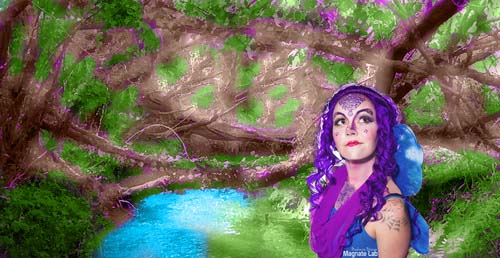

Rastor Image:
 Rastor ImageThe two images I chose was a forest and a fairy that looked similar to my character Genova and where she lives! I only combined 2 images for this one. But I also edited the color of the forest to make it seem more of where Genova lives. The most challenging part was trying to figure out what colors to use for the background but I was able to think of how colorful and bright Genova's world is so that's where I got the idea from.